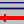

2.4.2. TAB “Equations”¶
One must begin with the first enabled ASCII text field (the uppermost, the only one enabled when beginning with a new project), in which equations are to be inserted line-by-line: Text field for equations.
If all equations have been given formula symbols are extracted from them by clicking the button “Load symbols(1) from equations”, followed by a syntax check using the internal function parser and the symbols are loaded into a table which then may be edited and values in the columns Unit and Meaning may be added.
After having edited the equations, the following cases may occur regarding already existing symbols:
New symbols have been introduced. The corresponding symbol table rows are green colored.
Already defined symbols are no longer needed (dispensable symbols). The corresponding symbol table rows are put to the end of the table being yellow colored.
The yellow-colored table rows must at first be marked/selected with the mouse; then, they are removed using the toolbar icon „delete rows“ . Some symbols, not directly used within the equations, but still needed (e. g., counting durations), must not be deleted.
For further editing: see Editing the symbol list.
For such quantities within the symbol list, for which mean and variance are to be determined from an associated data set, the value “m“ is set in the column “type“ instead of “a“ (dependent quantity) or “u“ (independent quantity). Furthermore, if a quantity, to be calculated by an equation, shall be used as a parameter without uncertainty, the type value “p“ can be used.
After the symbol list has been completed (in the testing phase units and meanings need not yet to be defined) by a mouse click on the button “Load symbols(2) of the finalized symbol table” the complete symbol list is loaded for the calculations to be done.
Now, the two selection fields “Net count rate” and “Gross count rate” are enabled. They allow selecting the appropriate symbols for the net counting rate and the gross counting rate. For the further course through the program these selections are only of interest to the calculations of Decision threshold and Detection limit. After having selected them they have to be loaded by clicking the button “Accept net and gross count rates”.
If more than one output quantity is defined, those symbols for the net and gross counting rate must be chosen belonging to the actually active output quantity.
Note
The identification of the net counting rate (more precisely: of the procedure dependent net counting rate, see Numerical procedures) is needed to allow within the iteration for the Detection limit a simple numerical inversion of the equations, from the varied output quantity (e.g. activity in Bq/kg wet weight) back to the net counting rate (in \(s^{- 1}\)). The gross count rate symbol must be identified because the user has to supply the uncertainty function for it; for the determination of Decision threshold and Detection limit the value of the gross count rate is varied internally where this uncertainty function is then used to calculate its associated modified uncertainty value.
Exceptions:
in the analysis of a decay curve with linear Least squares fitting (calling Linfit) the indication of a gross counting rates is not required;
similarly, in the case of estimating a mean of activities from individual gamma lines of a radionuclide (calling Gamspk1); the selection of the gross counting rate is inapplicable; the net counting rate, however, has to be selected because it acts as placeholder for the source activity (Bq);
when summing up or averaging several aliquot measurements (calling SumEval)
With these exception cases the symbol to be selected as net counting rate (or the source activity in the case of Gamspk1) must be that one which is defined in the equations by the call to Linfit or to Gamspk1.
After step 4 the TAB has been successfully treated and the next TAB to be treated, TAB “Values, Uncertainties” is enabled and selected then by a mouse click.